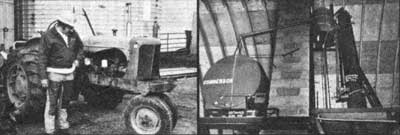

STAFF PHOTOS
CLOCKWISE FROM ABOVE, LEFT: Our truck and taxi in Washington, D.C... Today show's Jane Pauley ""talks alky"" with MOTHER's Ray Healy .... Clarence Goosen assembles the still .... Testers can't believe the cab's ""clean"" emissions.